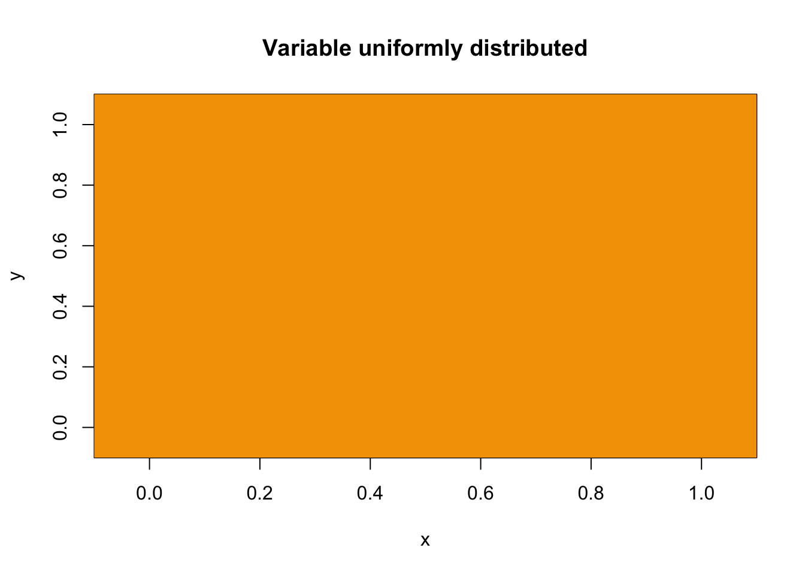
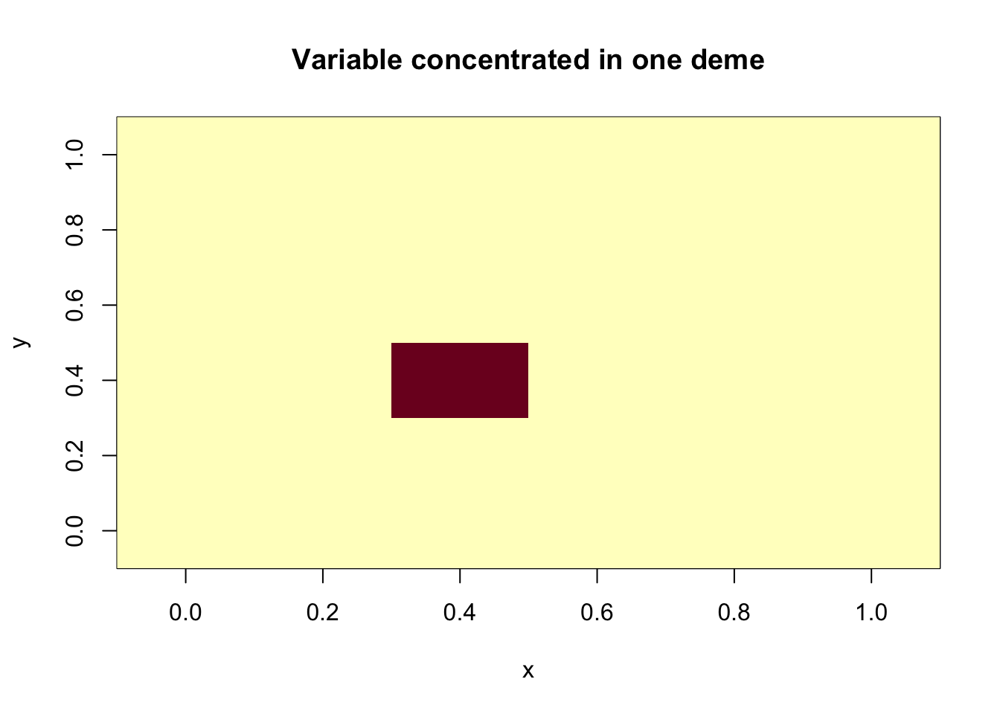
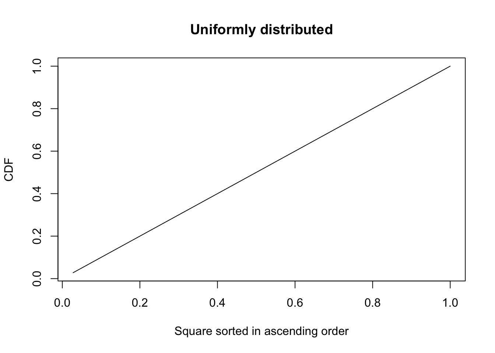
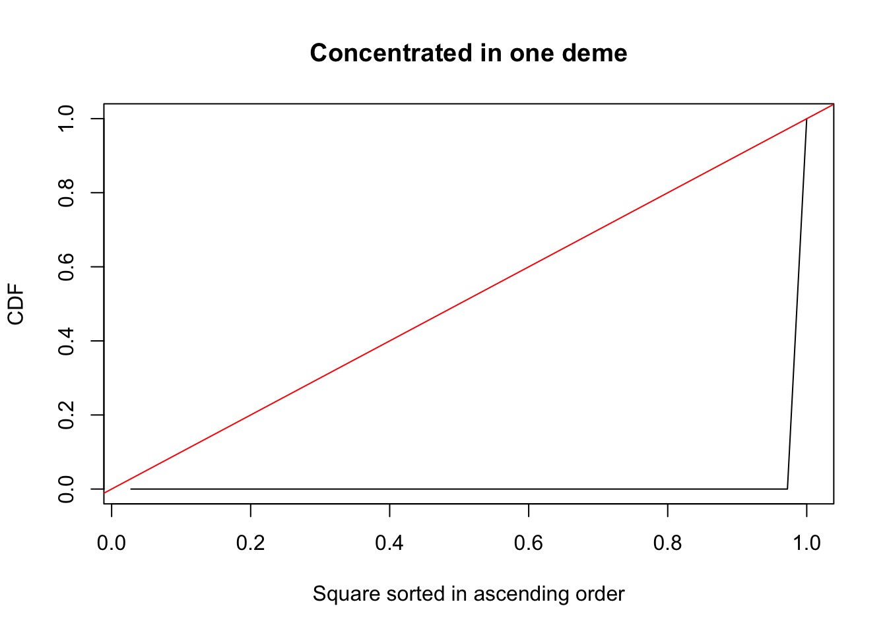
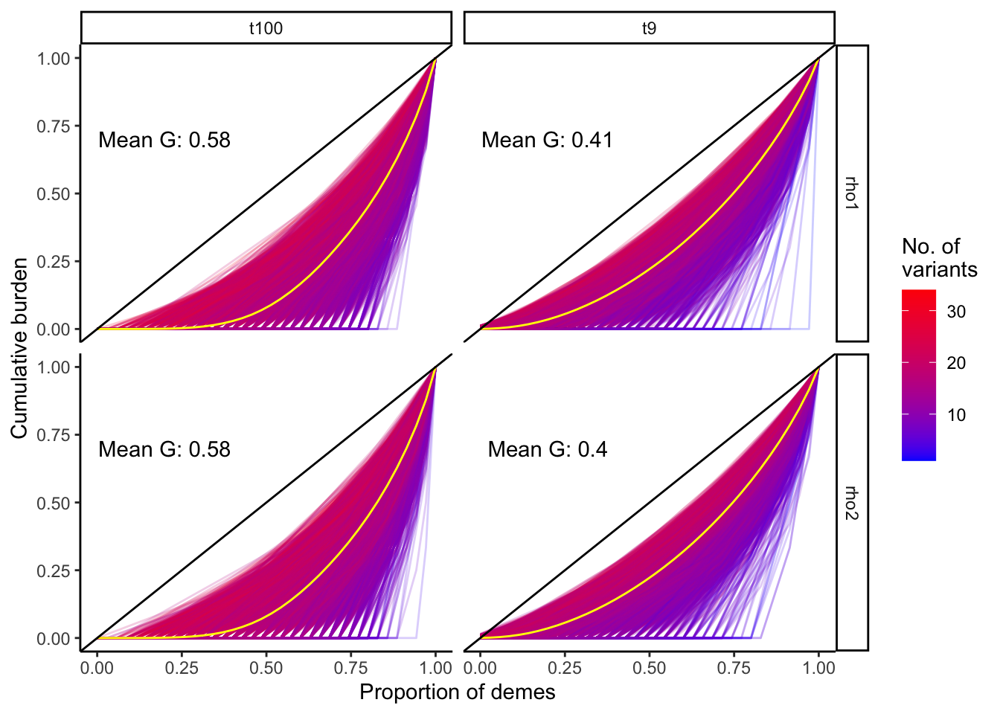

Geographic clustering of gene burden
Last updated: 2020-12-22
Checks: 6 1
Knit directory: popstruct_scripts/
This reproducible R Markdown analysis was created with workflowr (version 1.6.2). The Checks tab describes the reproducibility checks that were applied when the results were created. The Past versions tab lists the development history.
The R Markdown file has unstaged changes. To know which version of the R Markdown file created these results, you’ll want to first commit it to the Git repo. If you’re still working on the analysis, you can ignore this warning. When you’re finished, you can run wflow_publish to commit the R Markdown file and build the HTML.
Great job! The global environment was empty. Objects defined in the global environment can affect the analysis in your R Markdown file in unknown ways. For reproduciblity it’s best to always run the code in an empty environment.
The command set.seed(20201202) was run prior to running the code in the R Markdown file. Setting a seed ensures that any results that rely on randomness, e.g. subsampling or permutations, are reproducible.
Great job! Recording the operating system, R version, and package versions is critical for reproducibility.
Nice! There were no cached chunks for this analysis, so you can be confident that you successfully produced the results during this run.
Great job! Using relative paths to the files within your workflowr project makes it easier to run your code on other machines.
Great! You are using Git for version control. Tracking code development and connecting the code version to the results is critical for reproducibility.
The results in this page were generated with repository version 5bce003. See the Past versions tab to see a history of the changes made to the R Markdown and HTML files.
Note that you need to be careful to ensure that all relevant files for the analysis have been committed to Git prior to generating the results (you can use wflow_publish or wflow_git_commit). workflowr only checks the R Markdown file, but you know if there are other scripts or data files that it depends on. Below is the status of the Git repository when the results were generated:
Ignored files:
Ignored: .DS_Store
Ignored: .Rproj.user/
Ignored: analysis/.DS_Store
Ignored: code/.DS_Store
Ignored: data/.DS_Store
Ignored: data/burden_msprime/
Ignored: data/burden_msprime2/
Ignored: data/gwas/
Ignored: data/ukmap/
Ignored: output/plots/
Untracked files:
Untracked: analysis/biasvaccuracy_prsascertainment.Rmd
Untracked: analysis/plotting_prs_sib_effects.Rmd
Untracked: analysis/plottingprs_distribution_gridt.Rmd
Untracked: analysis/plt_burden_association.Rmd
Untracked: analysis/plt_gwas_results_t9.Rmd
Untracked: analysis/plt_ukb_unrelated_prs.Rmd
Untracked: analysis/prs_wt_finemapping.Rmd
Untracked: code/burden_msprime/
Untracked: code/fine_mapping/
Untracked: code/germline_ibd/
Untracked: code/gwas/
Untracked: code/imputation/
Untracked: code/optimize_migration_rate/
Untracked: code/pca_plots/
Untracked: code/prs/
Untracked: code/qqplots/
Untracked: code/revisions/
Untracked: code/shared_scripts/
Untracked: code/sib_analysis/
Untracked: code/simulating_genotypes/
Untracked: code/simulating_phenotypes/
Unstaged changes:
Modified: README.md
Modified: analysis/Simulating_heritable_phenotypes.Rmd
Deleted: analysis/Simulating_heritable_phenotypes.nb.html
Modified: analysis/_site.yml
Modified: analysis/index.Rmd
Modified: analysis/plt_PCA.Rmd
Deleted: analysis/plt_PCA.nb.html
Modified: analysis/plt_burden_clustering.Rmd
Deleted: analysis/plt_burden_clustering.nb.html
Modified: analysis/plt_lambda_v_frequency_ukb.Rmd
Deleted: analysis/plt_lambda_v_frequency_ukb.nb.html
Deleted: burden_msprime/.ipynb_checkpoints/Untitled-Copy1-checkpoint.ipynb
Deleted: burden_msprime/.ipynb_checkpoints/Untitled-checkpoint.ipynb
Deleted: burden_msprime/Notes_burden_msprime.txt
Deleted: burden_msprime/Untitled-Copy1.ipynb
Deleted: burden_msprime/Untitled.ipynb
Deleted: burden_msprime/burden_association_tests_norecomb.Rmd
Deleted: burden_msprime/burden_association_tests_norecomb.nb.html
Deleted: burden_msprime/burden_clustering.Rmd
Deleted: burden_msprime/burden_clustering.nb.html
Deleted: burden_msprime/burden_illustration.R
Deleted: burden_msprime/burden_test.haps.npz
Deleted: burden_msprime/generate_burden/burden_association.py
Deleted: burden_msprime/generate_burden/burden_gini.py
Deleted: burden_msprime/generate_burden/burden_gwas.txt
Deleted: burden_msprime/generate_burden/generate_burden_t100.py
Deleted: burden_msprime/generate_burden/generate_burden_t9.py
Deleted: burden_msprime/generate_burden/msprime_genic_burden_gini_nointrons_g_rho.py
Deleted: burden_msprime/generate_burden/msprime_genic_burden_t_r_x.py
Deleted: burden_msprime/generate_burden/wrapper_burden_association.sh
Deleted: burden_msprime/generate_burden/wrapper_burden_gini.sh
Deleted: burden_msprime/generate_burden/wrapper_generate_burden.sh
Deleted: burden_msprime/genos_gridt100_l1e7_ss750_m0.05_chr1_20.rmdup.train.cm.200k.eigenvec
Deleted: burden_msprime/genos_gridt100_l1e7_ss750_m0.05_chr1_20.rmdup.train.re.all.eigenvec
Deleted: burden_msprime/iid_train.txt
Deleted: burden_msprime/pheno_gridt100_noge_s9k.train.1.txt
Deleted: burden_msprime/plt_burden_association_t100.Rmd
Deleted: burden_msprime/plt_burden_association_t100.nb.html
Deleted: burden_msprime/plt_burden_association_t9.Rmd
Deleted: burden_msprime/plt_burden_association_t9.nb.html
Deleted: burden_msprime/plt_burden_clustering.Rmd
Deleted: burden_msprime/plt_burden_clustering.nb.html
Deleted: fine_mapping/comparing_susie_effects.R
Deleted: fine_mapping/comparing_susie_vs_ct.R
Deleted: fine_mapping/finemap.R
Deleted: fine_mapping/generate_genomic_coordinates_for_windows.R
Deleted: fine_mapping/generate_ldmat.sh
Deleted: fine_mapping/prs_wt_susie.Rmd
Deleted: fine_mapping/prs_wt_susie.nb.html
Deleted: fine_mapping/prs_wt_susie.sh
Deleted: fine_mapping/susie.R
Deleted: fine_mapping/wrapper_susie.sh
Deleted: germline_ibd/make_grm.R
Deleted: germline_ibd/proc_germline.R
Deleted: gwas/grid/notes_on_subsetting_snps_from_tau9.txt
Deleted: gwas/grid/tau-9/blmm.sh
Deleted: gwas/grid/tau-9/gcta_mlma_gridt9.sh
Deleted: gwas/grid/tau-9/gwas_wrapper_gridt-9_noge.sh
Deleted: gwas/grid/tau-9/gwas_wrapper_gridt9_ge.sh
Deleted: gwas/grid/tau-9/gwas_wrapper_gridt9_ge_geo.sh
Deleted: gwas/grid/tau-9/gwas_wrapper_gridt9_ge_re2.sh
Deleted: gwas/grid/tau-9/gwas_wrapper_gridt9_ge_repruned2.sh
Deleted: gwas/grid/tau-9/paste_cmre_pca.sh
Deleted: gwas/grid/tau-9/plot_prs_all.R
Deleted: gwas/grid/tau-9/processgwas4qq.R
Deleted: gwas/grid/tau-9/prs_wrapper.sh
Deleted: gwas/grid/tau-9/prs_wrapper2.sh
Deleted: gwas/grid/tau-9/prs_wrapper3.sh
Deleted: gwas/grid/tau-9/scripts/generate_genotypes/pca.sh
Deleted: gwas/grid/tau-9/scripts/generate_genotypes/vcf2plink.sh
Deleted: gwas/grid/tau-9/scripts/gwas/gwas.sh
Deleted: gwas/grid/tau-9/scripts/prs/cal_prs.sh
Deleted: gwas/grid/tau-9/scripts/prs/cal_prs2.sh
Deleted: gwas/grid/tau-9/scripts/prs/cal_prs3.sh
Deleted: gwas/grid/tau-9/scripts/prs/clump.R
Deleted: gwas/grid/tau-9/scripts/prs/clump2.R
Deleted: gwas/grid/tau-9/scripts/prs/clump3.R
Deleted: gwas/grid/tau-9/scripts/simphenotype/simgeffects.R
Deleted: gwas/grid/tau-9/scripts/simphenotype/simphenotype_ge.R
Deleted: gwas/grid/tau-9/scripts/simphenotype/simphenotype_ge_wrapper.sh
Deleted: gwas/grid/tau-9/scripts/simphenotype/simphenotype_noge.R
Deleted: gwas/grid/tau-9/simphenotype_noge.R
Deleted: gwas/grid/tau-9/split_beds.R
Deleted: gwas/grid/tau-9/wrapper_processqq_gridt9.sh
Deleted: gwas/grid/tau100/blmm.sh
Deleted: gwas/grid/tau100/blmm_nopc.sh
Deleted: gwas/grid/tau100/cat_gwas_sib.sh
Deleted: gwas/grid/tau100/cat_prs_sibs.sh
Deleted: gwas/grid/tau100/fastgwa.sh
Deleted: gwas/grid/tau100/gcta_mlma_gridt100_ge.sh
Deleted: gwas/grid/tau100/gctaloco_mlma_gridt100_ge.sh
Deleted: gwas/grid/tau100/gctaloco_mlma_gridt100_noge.sh
Deleted: gwas/grid/tau100/gwas_ge_incombined_sample.sh
Deleted: gwas/grid/tau100/gwas_wrapper_gridt100_ge.sh
Deleted: gwas/grid/tau100/gwas_wrapper_gridt100_ge_test.sh
Deleted: gwas/grid/tau100/lmmloco_wrapper_gridt100_ge.sh
Deleted: gwas/grid/tau100/lmmloco_wrapper_gridt100_noge.sh
Deleted: gwas/grid/tau100/locowrap_ge.sh
Deleted: gwas/grid/tau100/locowrap_noge.sh
Deleted: gwas/grid/tau100/paste_cmre_pca.sh
Deleted: gwas/grid/tau100/plot_prs_all.R
Deleted: gwas/grid/tau100/plot_prs_all_t100.R
Deleted: gwas/grid/tau100/prs_wrapper.sh
Deleted: gwas/grid/tau100/prs_wrapper_mlma.sh
Deleted: gwas/grid/tau100/prs_wrapper_sibs.sh
Deleted: gwas/grid/tau100/prs_wrapper_sibs_ascertained.sh
Deleted: gwas/grid/tau100/scripts/generate_genotypes/pca.sh
Deleted: gwas/grid/tau100/scripts/generate_genotypes/vcf2plink.sh
Deleted: gwas/grid/tau100/scripts/gwas/gwas.sh
Deleted: gwas/grid/tau100/scripts/prs/ascertain_effects.R
Deleted: gwas/grid/tau100/scripts/prs/cal_prs.sh
Deleted: gwas/grid/tau100/scripts/prs/cal_prs_mlma.sh
Deleted: gwas/grid/tau100/scripts/prs/cal_prs_sibs.sh
Deleted: gwas/grid/tau100/scripts/prs/cal_prs_sibs_ascertained.sh
Deleted: gwas/grid/tau100/scripts/prs/clump.R
Deleted: gwas/grid/tau100/scripts/prs/clump_mlma.R
Deleted: gwas/grid/tau100/scripts/prs/clump_pcs0.R
Deleted: gwas/grid/tau100/scripts/prs/clump_sibs.R
Deleted: gwas/grid/tau100/scripts/simphenotype/simgeffects.R
Deleted: gwas/grid/tau100/scripts/simphenotype/simphenotype_ge.R
Deleted: gwas/grid/tau100/scripts/simphenotype/simphenotype_ge_wrapper.sh
Deleted: gwas/grid/tau100/scripts/simphenotype/simphenotype_noge.R
Deleted: gwas/investigating_prs_ns_complexdem.Rmd
Deleted: gwas/investigating_prs_ns_complexdem.nb.html
Deleted: gwas/investigating_prs_ns_complexdem2.Rmd
Deleted: gwas/investigating_prs_ns_complexdem2.nb.html
Deleted: gwas/investigating_prs_ns_structure.Rmd
Deleted: gwas/investigating_prs_ns_structure.nb.html
Deleted: gwas/ukb/.ipynb_checkpoints/Untitled-checkpoint.ipynb
Deleted: gwas/ukb/Untitled.ipynb
Deleted: gwas/ukb/gwas_wrapper_ukb_ge.sh
Deleted: gwas/ukb/paste_cmre_pca.sh
Deleted: gwas/ukb/paste_cmre_pca_ukb.sh
Deleted: gwas/ukb/prs_wrapper.sh
Deleted: gwas/ukb/scripts/gwas/gwas.sh
Deleted: gwas/ukb/scripts/prs/cal_prs.sh
Deleted: gwas/ukb/scripts/prs/clump.R
Deleted: gwas/ukb/scripts/simphenotype/simgeffects.R
Deleted: gwas/ukb/scripts/simphenotype/simphenotype_ge.R
Deleted: gwas/ukb/scripts/simphenotype/simphenotype_ge_wrapper.sh
Deleted: gwas/ukb/scripts/simphenotype/simphenotype_noge.R
Deleted: gwas/ukb/scripts/simphenotype/simphenotype_noge_wrapper.sh
Deleted: imputation/extract_beagle_info.sh
Deleted: imputation/imputation_v_rarePCA.Rmd
Deleted: imputation/imputation_v_rarePCA.nb.html
Deleted: imputation/pca_on_imputed_genotypes.sh
Deleted: imputation/wrapper_beagle.sh
Deleted: imputation/wrapper_imputation.sh
Deleted: optimize_migration_rate/Fst_plots.R
Deleted: optimize_migration_rate/bplace_gwas.R
Deleted: optimize_migration_rate/complex_dem/bplacegwas_fst_grid.sh
Deleted: optimize_migration_rate/complex_dem/cal_fst.py
Deleted: optimize_migration_rate/complex_dem/complex_dem.py
Deleted: optimize_migration_rate/complex_dem/complex_dem_2.py
Deleted: optimize_migration_rate/complex_dem/complex_dem_bplace_wrapper.sh
Deleted: optimize_migration_rate/complex_dem/opt_lambda_complexdem.Rmd
Deleted: optimize_migration_rate/complex_dem/opt_lambda_complexdem.nb.html
Deleted: optimize_migration_rate/grid/tau-9/grid_bplace_wrapper.sh
Deleted: optimize_migration_rate/grid/tau100/grid_bplace_wrapper.sh
Deleted: pca_plots/Effect_of_using_cmre_together_pca.Rmd
Deleted: pca_plots/collinearity_bw_cmandrare_pcs.Rmd
Deleted: pca_plots/collinearity_bw_cmandrare_pcs.nb.html
Deleted: pca_plots/plt_complex_pca.R
Deleted: pca_plots/plt_pca.R
Deleted: prs/analyze_true_geneticeffects_out_o_sample.Rmd
Deleted: prs/biasvaccuracy_prsascertainment.Rmd
Deleted: prs/biasvaccuracy_prsascertainment.nb.html
Deleted: prs/clump_3.R
Deleted: prs/complex_dem/Plotting_esizes_and_prs.Rmd
Deleted: prs/complex_dem/Plotting_esizes_and_prs.nb.html
Deleted: prs/complex_dem/investigating_ns_strat.R
Deleted: prs/complex_dem/plotting_prs_from_sibeffects.Rmd
Deleted: prs/complex_dem/plotting_prs_from_sibeffects.nb.html
Deleted: prs/complex_dem/plottingprs_distribution_complex.Rmd
Deleted: prs/complex_dem/plottingprs_distribution_complex.nb.html
Deleted: prs/grid/plottingprs_distribution_gridt.Rmd
Deleted: prs/grid/plottingprs_distribution_gridt.nb.html
Deleted: prs/grid/tau100/Plotting_esizes_and_prs.Rmd
Deleted: prs/grid/tau100/Plotting_esizes_and_prs.nb.html
Deleted: prs/grid/tau100/plotting_prs_mlma.Rmd
Deleted: prs/grid/tau100/plotting_prs_mlma.nb.html
Deleted: prs/grid/tau100/plotting_prs_sib_effects.Rmd
Deleted: prs/grid/tau100/plotting_prs_sib_effects.nb.html
Deleted: prs/grid/tau100/plottingprs_distribution_gridt100.Rmd
Deleted: prs/grid/tau100/plottingprs_distribution_gridt100.nb.html
Deleted: prs/plot_expvobs_prs_4.R
Deleted: prs/plot_r2_rlat_supplement.Rmd
Deleted: prs/plot_r2_rlat_supplement.nb.html
Deleted: prs/prs_test_wrapper.sh
Deleted: prs/simulating_genetic_effects_prs
Deleted: prs/ukb/plt_ukb_unrelated_prs.Rmd
Deleted: prs/ukb/plt_ukb_unrelated_prs.nb.html
Deleted: prs/ukb/plt_ukb_unrelated_prs_uniform.Rmd
Deleted: prs/ukb/plt_ukb_unrelated_prs_uniform.nb.html
Deleted: qqplots/GWAS_qqdetails.txt
Deleted: qqplots/fixed_effects/plt_gwas_results_t100_all.Rmd
Deleted: qqplots/fixed_effects/plt_gwas_results_t9_07062020.Rmd
Deleted: qqplots/fixed_effects/plt_gwas_results_t9_07062020.nb.html
Deleted: qqplots/fixed_effects/plt_gwas_results_ti_all.Rmd
Deleted: qqplots/fixed_effects/plt_lambda_v_frequency.Rmd
Deleted: qqplots/fixed_effects/plt_lambda_v_frequency.nb.html
Deleted: qqplots/fixed_effects/plt_lambda_v_frequency_ukb.Rmd
Deleted: qqplots/fixed_effects/plt_lambda_v_frequency_ukb.nb.html
Deleted: qqplots/fixed_effects/scripts/plot_panels.R
Deleted: qqplots/fixed_effects/scripts/plot_panels_t100.R
Deleted: qqplots/fixed_effects/scripts/plot_panels_t9.R
Deleted: qqplots/fixed_effects/scripts/processgwas4qq.R
Deleted: qqplots/fixed_effects/scripts/wrapper_processqq_gridt100.sh
Deleted: qqplots/lmms/plt_gridt100_blmm.Rmd
Deleted: qqplots/lmms/plt_gridt100_blmm.nb.html
Deleted: qqplots/lmms/plt_gridt100_mlma.Rmd
Deleted: qqplots/lmms/plt_gridt100_mlma.nb.html
Deleted: qqplots/lmms/plt_gridt9_mlma.Rmd
Deleted: qqplots/lmms/plt_gridt9_mlma.nb.html
Deleted: qqplots/lmms/processgwas4qq_lmm.R
Deleted: qqplots/lmms/wrapper_processqq_gridt100.sh
Deleted: revisions/PCA_v_frequency_bracket_gridt100.sh
Deleted: revisions/PCA_v_frequency_bracket_ukb.sh
Deleted: revisions/PCA_v_number_of_cm_variants.sh
Deleted: revisions/ascertainment_schemes_prs_prediction.Rmd
Deleted: revisions/ascertainment_schemes_prs_prediction.nb.html
Deleted: revisions/calculate_prs_with_discoveryeffects.sh
Deleted: revisions/comparing_gvalues.R
Deleted: revisions/compute_genetic_values.sh
Deleted: revisions/compute_prs_a1_r2_p3.sh
Deleted: revisions/compute_prs_a1_r3s_p2.sh
Deleted: revisions/compute_prs_a3s_r1_p2.sh
Deleted: revisions/compute_prs_a3s_r2_p1.sh
Deleted: revisions/figuring_out_prediction_accuracy.Rmd
Deleted: revisions/figuring_out_prediction_accuracy.nb.html
Deleted: revisions/figuring_out_prediction_accuracy2.Rmd
Deleted: revisions/figuring_out_prediction_accuracy2.nb.html
Deleted: revisions/germline_ukb.sh
Deleted: revisions/rm_rare.sh
Deleted: shared_scripts/ascertain_effects.R
Deleted: shared_scripts/cal_prs.sh
Deleted: shared_scripts/cal_prs_mlma.sh
Deleted: shared_scripts/cal_prs_sibs.sh
Deleted: shared_scripts/cal_prs_sibs_ascertained.sh
Deleted: shared_scripts/clump.R
Deleted: shared_scripts/clump_mlma.R
Deleted: shared_scripts/clump_sibs.R
Deleted: shared_scripts/gen_map.R
Deleted: shared_scripts/get_se.R
Deleted: shared_scripts/gwas.sh
Deleted: shared_scripts/re_estimate_effects.R
Deleted: shared_scripts/simgeffects.R
Deleted: shared_scripts/simphenotype_ge.R
Deleted: shared_scripts/simphenotype_ge_wrapper.sh
Deleted: shared_scripts/simphenotype_noge.R
Deleted: sib_analysis/complex_dem/.ipynb_checkpoints/Sibling gwas - practice-checkpoint.ipynb
Deleted: sib_analysis/complex_dem/Sibling gwas - practice.ipynb
Deleted: sib_analysis/complex_dem/cat_sibs.sh
Deleted: sib_analysis/complex_dem/edit_fam.R
Deleted: sib_analysis/complex_dem/generate_gvalue_sib.py
Deleted: sib_analysis/complex_dem/generate_gvalue_sib_wrap.sh
Deleted: sib_analysis/complex_dem/generate_sib_phenotypes.sh
Deleted: sib_analysis/complex_dem/gwas_sib_complex_wrapper.sh
Deleted: sib_analysis/complex_dem/make_sib_haplotypes.py
Deleted: sib_analysis/complex_dem/mate4sibs.py
Deleted: sib_analysis/complex_dem/sib_gwas.py
Deleted: sib_analysis/complex_dem/simphenotype_sibs_ge.R
Deleted: sib_analysis/complex_dem/wrapper_generate_sib_haplotypes.sh
Deleted: sib_analysis/grid/tau100/generate_gvalue_sib.py
Deleted: sib_analysis/grid/tau100/generate_gvalue_sib_wrap.sh
Deleted: sib_analysis/grid/tau100/generate_sib_phenotypes.sh
Deleted: sib_analysis/grid/tau100/gwas_sib_grid_wrapper.sh
Deleted: sib_analysis/grid/tau100/make_sib_haplotypes.py
Deleted: sib_analysis/grid/tau100/mate4sibs.py
Deleted: sib_analysis/grid/tau100/sib_gwas.py
Deleted: sib_analysis/grid/tau100/simphenotype_sibs_ge.R
Deleted: sib_analysis/grid/tau100/wrap_gwas_reps.sh
Deleted: sib_analysis/grid/tau100/wrapper_generate_sib_haplotypes.sh
Deleted: simulating_genotypes/grid/generate_genos_grid.py
Deleted: simulating_genotypes/grid/simulating_and_processing_genotypes_t100.txt
Deleted: simulating_genotypes/grid/simulating_and_processing_genotypes_t9.txt
Deleted: simulating_genotypes/grid/tau-9/generate_genos_gridt9_wrapper.sh
Deleted: simulating_genotypes/grid/tau-9/generate_popfile_t9.R
Deleted: simulating_genotypes/grid/tau-9/pca_t9.sh
Deleted: simulating_genotypes/grid/tau-9/vcf2plink_t9.sh
Deleted: simulating_genotypes/grid/tau100/generate_genos_gridt100_wrapper.sh
Deleted: simulating_genotypes/grid/tau100/generate_popfile_t100.R
Deleted: simulating_genotypes/grid/tau100/pca_t100.sh
Deleted: simulating_genotypes/grid/tau100/pca_t100_test.sh
Deleted: simulating_genotypes/grid/tau100/vcf2plink_t100.sh
Deleted: simulating_genotypes/ukb/generate_genos_ukb.py
Deleted: simulating_genotypes/ukb/generate_pop_ukb.R
Deleted: simulating_genotypes/ukb/pca_ukb.sh
Deleted: simulating_genotypes/ukb/uk_nuts2_adj.txt
Deleted: simulating_genotypes/ukb/uk_nuts2_adj_ids.txt
Deleted: simulating_genotypes/ukb/ukb_gengeno_wrapper_1.sh
Deleted: simulating_genotypes/ukb/vcf2plink_ukb.sh
Deleted: simulating_phenotypes/Simulating_heritable_phenotypes.Rmd
Deleted: simulating_phenotypes/Simulating_heritable_phenotypes.nb.html
Note that any generated files, e.g. HTML, png, CSS, etc., are not included in this status report because it is ok for generated content to have uncommitted changes.
These are the previous versions of the repository in which changes were made to the R Markdown (analysis/plt_burden_clustering.Rmd) and HTML (docs/plt_burden_clustering.html) files. If you’ve configured a remote Git repository (see ?wflow_git_remote), click on the hyperlinks in the table below to view the files as they were in that past version.
| File | Version | Author | Date | Message |
|---|---|---|---|---|
| html | 5bce003 | Arslan-Zaidi | 2020-12-22 | added wflow builds |
| Rmd | 99813ec | Arslan-Zaidi | 2020-12-03 | organizing workflowr project |
| html | 99813ec | Arslan-Zaidi | 2020-12-03 | organizing workflowr project |
suppressWarnings(suppressMessages({
library(ggplot2)
library(data.table)
library(dplyr)
library(reshape2)
library(rprojroot)
library(tidyr)
}
))
F = is_rstudio_project$make_fix_file()Introduction
Here, we analyze the geographic clustering of gene burden as a function of the demographic history and the number of variants that the burden is aggregated across. We can do this using the Gini coefficient (\(G\)).
\(G\) is widely used in economics to study the inequality in the distribution of income, wealth etc. We are using it here to study how uniformly the frequency of a variant is distributed.
Illustration with a dummy example
To illustrate, let’s construct a 6x6 grid where the value of each cell is distributed either equally among all cells or concentrated in a single cell.
#variable uniformly distributed in space
spat.mat1 = matrix(1/36, 6, 6)
#variable concentrated in one deme
spat.mat2 = matrix(0, 6, 6)
spat.mat2[3,3] = 1
image(spat.mat1,
xlab = "x",
ylab = "y",
main = "Variable uniformly distributed")
| Version | Author | Date |
|---|---|---|
| 99813ec | Arslan-Zaidi | 2020-12-03 |
image(spat.mat2,
xlab = "x",
ylab = "y",
main = "Variable concentrated in one deme")
| Version | Author | Date |
|---|---|---|
| 99813ec | Arslan-Zaidi | 2020-12-03 |
Let’s plot the cumulative distribution of this variable in either case.
indices = seq(1,36)/36
plot(indices, cumsum(sort(spat.mat1)),
type = "l",
xlab = "Square sorted in ascending order",
ylab = "CDF",
main = "Uniformly distributed")
| Version | Author | Date |
|---|---|---|
| 99813ec | Arslan-Zaidi | 2020-12-03 |
plot(indices, cumsum(sort(spat.mat2)),
type = "l",
xlab = "Square sorted in ascending order",
ylab = "CDF",
main = "Concentrated in one deme")
abline(a = 0, b = 1, col = "red")
| Version | Author | Date |
|---|---|---|
| 99813ec | Arslan-Zaidi | 2020-12-03 |
You can see that when the variable is uniformly distributed, the cdf is the diagonal. Compare this to the case when the variable is concentrated to one square. The cdf in that case is a curve and the degree of departure of this curve from the diagonal measures how non-uniformly the variable is distributed. That’s what \(G\) is measuring. Actually, technically \(G\) measures the fraction of the area between the diagonal and the curve, which gets larger as the variable we are studying is more non-uniformly distributed. There are various methods available to calculate it, though we’re going to use a simple method involving the Trapezium rule to calculate it. The algorithm is as follows:
Let’s denote the value in the \(i^{th}\) square as \(x_i\). Sort each square in ascending order of \(x_i\) and calculate the cumulative sum (\(y_i\)) of \(x_i\). For simplicity, we assume that \(x_i\) is a fraction of the total such that the \(max(X) = 1\).
The area under the curve for each square (except for the first one) is a trapezium, which can be calculated using: \(\frac{y_i ~ + ~ y_{i-1}}{2}\).
The area under the curve for the first square is a triangle: \(\frac{y_1}{2}\)
Sum these all together: \(\frac{y_1}{2} + \sum_{1 < i \leq n}{ \frac{y_i ~ + ~ y_{i-1}} {2}}\)
Calculate the area under the diagonal: \(\frac{n}{2}\).
Subtract 4 from 5 to get the area between the curve and the diagonal:
\[\frac{n - y_1 - \sum_{1 < i \leq n}{y_i ~ + ~ y_{i-1}}}{2}\] 6. Divide this by 5 to get the fraction of the total area under the diagonal:
\[G = \frac{n - y_i - \sum_{i < 1 \leq n}{y + y_{i-1}}}{2}\] And that’s the formula used in our paper. Let’s code this as a function.
fgco = function(x){
x = c(0,sort(as.matrix(x)))
y = cumsum(x)
n = length(y)
aud = (n-1)/2 # area under diagonal
auc = sum(unlist(sapply(seq(1,n),
function(i){0.5*(y[i] + y[i-1])}))) #area under curve
ar = aud - auc #area remaining
if(ar < 0){ar = 0}else{ar = ar}
g = ar/aud
return(data.table(g = g))
}Let’s apply it to our example above and see what \(G\) comes out to be in each case.
print(paste("G when variable is uniformly distributed : ",
fgco(spat.mat1)))[1] "G when variable is uniformly distributed : 0"print(paste("G when variable is concentrated in one deme : ",
fgco(spat.mat2)))[1] "G when variable is concentrated in one deme : 0.972222222222222"So \(G\) goes from 0 (when the variable is uniformly distributed) to 1 when the variable is concentrated in one deme.
Calculating \(G\) for single variants (common and rare)
Let’s plot the Gini curves for 1,000 common and 1,000 rare variants, simulated separately under the recent structure and perpetual structure model and calculate G for each variant.
###load the stratified frequencies
#simulated under the recent structure model
#for rare variants
cm100 = fread(F("data/gwas/grid/genotypes/tau100/ss500/train/frq.clst/genos_gridt100_cm.frq.strat"))
#for common variants
re100 = fread(F("data/gwas/grid/genotypes/tau100/ss500/train/frq.clst/genos_gridt100_maxmaf0.01.frq.strat"))
cm100$freq = "cm"
re100$freq = "re"
cm100$tau = "t100"
re100$tau = "t100"
#simulated under the perpetual structure model
#common variants
cm9 = fread(F("data/gwas/grid/genotypes/tau-9/ss500/train/frq.clst/genos_gridt9_cm.frq.strat"))
#rare variants
re9 = fread(F("data/gwas/grid/genotypes/tau-9/ss500/train/frq.clst/genos_gridt9_maxmaf0.01.frq.strat"))
cm9$freq = "cm"
re9$freq = "re"
cm9$tau = "t9"
re9$tau = "t9"
#rbind them both for plotting and calculation of summary stats
both = rbind(cm100, re100, cm9, re9)
both = both %>%
group_by(freq,tau,SNP)%>%
arrange(MAF)%>%
mutate(deme = seq(0,35),
deme.p=deme/max(deme),
maf.p = cumsum(MAF)/sum(MAF))
#changing function a little b/c I already sorted and calculated the cumulative sum
fgco = function(x){
y = c(0,as.matrix(x))
# x = c(0,sort(as.matrix(x)))
# y = cumsum(x)
n = length(y)
aud = (n-1)/2 # area under diagonal
auc = sum(unlist(sapply(seq(1,n),
function(i){0.5*(y[i] + y[i-1])}))) #area under curve
ar = aud - auc #area remaining
if(ar < 0){ar = 0}else{ar = ar}
g = ar/aud
return(data.table(g = g))
}
both.sum = both%>%
group_by(freq,tau,deme.p)%>%
summarize(maf.p = mean(maf.p))`summarise()` regrouping output by 'freq', 'tau' (override with `.groups` argument)#calculate gini coefficients
both.g = both%>%
group_by(freq,tau,SNP)%>%
do(fgco(.$maf.p))
both.g.mean = both.g %>%
group_by(freq,tau)%>%
summarize(mean.g = mean(g))`summarise()` regrouping output by 'freq' (override with `.groups` argument)labels=c(cm = "Common (MAF>0.05)",
re = "Rare (MAF<0.01)",
t100 = "Recent model",
t9 = "Perpetual model")
plt_varfreq = ggplot(both)+
geom_line(aes(deme.p,
maf.p,
group = SNP),
color = "grey",
alpha = 0.3)+
geom_abline(intercept = 0,
slope = 1)+
geom_line(data=both.sum,
aes(deme.p,maf.p),
color="red")+
theme_classic()+
facet_grid(tau ~ freq,
labeller = as_labeller(labels))+
labs(x="Proportion of demes",
y="Cumulative burden")+
scale_x_continuous(breaks=c(0.0,0.5,1.0))+
geom_text(data = both.g.mean,
aes(x = 0.2,
y = 0.7,
label = paste("Mean G:",
round(mean.g,2),
sep = " ")))
plt_varfreq
| Version | Author | Date |
|---|---|---|
| 99813ec | Arslan-Zaidi | 2020-12-03 |
The curves and mean values of \(G\) tell us that:
(i). Rare variants tend to be more geographically structured/restricted than common variants
(ii). Rare variants are more structured under the recent model than in the perpetual model. This is likely due to the fact that the migration rate under the perpetual model is higher than that in the recent model (to give the same amount of structure).
Calculating \(G\) for gene burden
Let’s calculate \(G\) for mutation burden as a function of the number of mutations aggregated across, recombination rate, and demographic history.
gini1 = fread(F("data/burden_msprime2/gini/bgini_r0_t100_xall.txt.gz"))
gini2 = fread(F("data/burden_msprime2/gini/bgini_r1_t100_x1_100.txt.gz"))
gini3 = fread(F("data/burden_msprime2/gini/bgini_r0_t9_x1_100.txt.gz"))
gini4 = fread(F("data/burden_msprime2/gini/bgini_r1_t9_x1_100.txt.gz"))
colnames(gini1)=colnames(gini2) = colnames(gini3) = colnames(gini4) =c("seed","tree","total_dosage",
paste("d_",seq(0,35),sep=""))
gini1 = gini1[seed%in%c(1:100)]
gini1$tau = gini2$tau = "t100"
gini3$tau = gini4$tau = "t9"
gini1$rho = gini3$rho = "rho1"
gini2$rho = gini4$rho = "rho2"
gini = rbind(gini1,gini2,gini3,gini4)
mgini = melt(gini,
id.vars=c("tau",
"rho","seed","tree","total_dosage"),
variable.name="deme_name",
value.name="burden")
mgini = mgini%>%
separate(deme_name,into=c("d","deme"))
mgini$deme = as.numeric(mgini$deme)
mgini = as.data.table(mgini)
mgini = mgini[,deme.p:=deme/max(deme),
by=c("tau","rho","seed","tree")]Read in the no. of variants used to calculate burden for each gene.
nvariants1 = fread(F("data/burden_msprime2/burden_r0_t100_xall_nvariants.txt.gz"))
nvariants2 = fread(F("data/burden_msprime2/burden_r1_t100_xall_nvariants.txt.gz"))
nvariants3 = fread(F("data/burden_msprime2/burden_r0_t9_xall_nvariants.txt.gz"))
nvariants4 = fread(F("data/burden_msprime2/burden_r1_t9_x1_579.txt.gz"))
colnames(nvariants1) = colnames(nvariants2) = colnames(nvariants3) = colnames(nvariants4) = c("seed","nvariants")
nvariants1$tree = rep(c(0:99),1000)
nvariants2$tree = rep(c(0:99),1000)
nvariants3$tree = rep(c(0:99),1000)
nvariants4$tree = rep(c(0:99),579)
nvariants1$tau = nvariants2$tau = "t100"
nvariants3$tau = nvariants4$tau = "t9"
nvariants1$rho = nvariants3$rho = "rho1"
nvariants2$rho = nvariants4$rho = "rho2"
nvariants = rbind(nvariants1,nvariants2,nvariants3,nvariants4)
nvariants = nvariants[seed%in%c(1:100)]Plot curves for each gene, coloring each curve with the number of rare variants in each gene across which burden was aggregated.
#we don't need to sort and calculate the cumulative burden because it's already done for us previously.
mgini[,gene:=paste(seed,tree,sep="_")]
mgini = merge(mgini,nvariants,by=c("tau","rho","seed","tree"))
mgini.sum = mgini%>%
group_by(tau,rho,deme.p)%>%
summarize(burden = mean(burden))`summarise()` regrouping output by 'tau', 'rho' (override with `.groups` argument)plt_gini_curves = ggplot(mgini)+
geom_line(aes(deme.p,
burden,
group = gene,
color = nvariants),
alpha=0.2)+
facet_grid(rho ~ tau)+
theme_classic()+
scale_color_gradient(low = "blue",
high = "red")+
geom_line(data = mgini.sum,
aes(deme.p,
burden),
color = "yellow")+
geom_abline(intercept = 0,
slope = 1,
color = "black")+
labs(x = "Proportion of demes",
y = "Cumulative burden",
color = "No. of\nvariants")Let’s add the mean gini coefficient to the curves.
#calculate gini coefficients
mgini.g = mgini %>%
group_by(rho,tau,seed,tree) %>%
do(fgco(.$burden))
mgini.g.means = mgini.g %>%
group_by( rho, tau) %>%
summarize(mean.gini.c = mean(g))`summarise()` regrouping output by 'rho' (override with `.groups` argument)plt_gini_curves = plt_gini_curves +
geom_text(data = mgini.g.means,
aes(x = 0.2, y = 0.7,
label = paste("Mean G:",
round(mean.gini.c,2),
sep = " ")))
plt_gini_curves
| Version | Author | Date |
|---|---|---|
| 99813ec | Arslan-Zaidi | 2020-12-03 |
The Gini curves show that gene burden tends to become more uniformly distributed across the grid as the number of variants aggregated increases.
sessionInfo()R version 4.0.3 (2020-10-10)
Platform: x86_64-apple-darwin17.0 (64-bit)
Running under: macOS Catalina 10.15.7
Matrix products: default
BLAS: /Library/Frameworks/R.framework/Versions/4.0/Resources/lib/libRblas.dylib
LAPACK: /Library/Frameworks/R.framework/Versions/4.0/Resources/lib/libRlapack.dylib
locale:
[1] en_US.UTF-8/en_US.UTF-8/en_US.UTF-8/C/en_US.UTF-8/en_US.UTF-8
attached base packages:
[1] stats graphics grDevices utils datasets methods base
other attached packages:
[1] tidyr_1.1.2 rprojroot_1.3-2 reshape2_1.4.4 dplyr_1.0.2
[5] data.table_1.13.2 ggplot2_3.3.2 workflowr_1.6.2
loaded via a namespace (and not attached):
[1] Rcpp_1.0.5 plyr_1.8.6 pillar_1.4.6 compiler_4.0.3
[5] later_1.1.0.1 git2r_0.27.1 R.methodsS3_1.8.1 R.utils_2.10.1
[9] tools_4.0.3 digest_0.6.27 evaluate_0.14 lifecycle_0.2.0
[13] tibble_3.0.4 gtable_0.3.0 pkgconfig_2.0.3 rlang_0.4.8
[17] rstudioapi_0.11 yaml_2.2.1 xfun_0.19 withr_2.3.0
[21] stringr_1.4.0 knitr_1.30 generics_0.1.0 fs_1.5.0
[25] vctrs_0.3.4 tidyselect_1.1.0 grid_4.0.3 glue_1.4.2
[29] R6_2.5.0 rmarkdown_2.5 farver_2.0.3 purrr_0.3.4
[33] magrittr_1.5 whisker_0.4 backports_1.1.10 scales_1.1.1
[37] promises_1.1.1 ellipsis_0.3.1 htmltools_0.5.0 colorspace_1.4-1
[41] httpuv_1.5.4 labeling_0.4.2 stringi_1.5.3 munsell_0.5.0
[45] crayon_1.3.4 R.oo_1.24.0